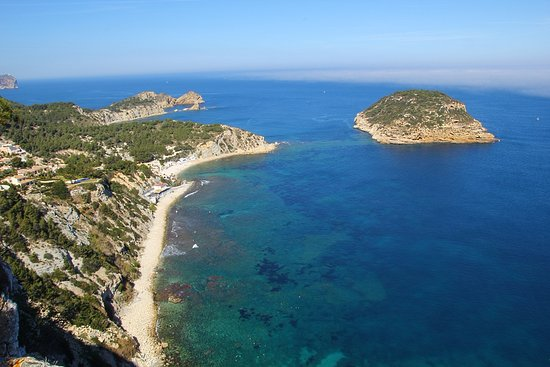
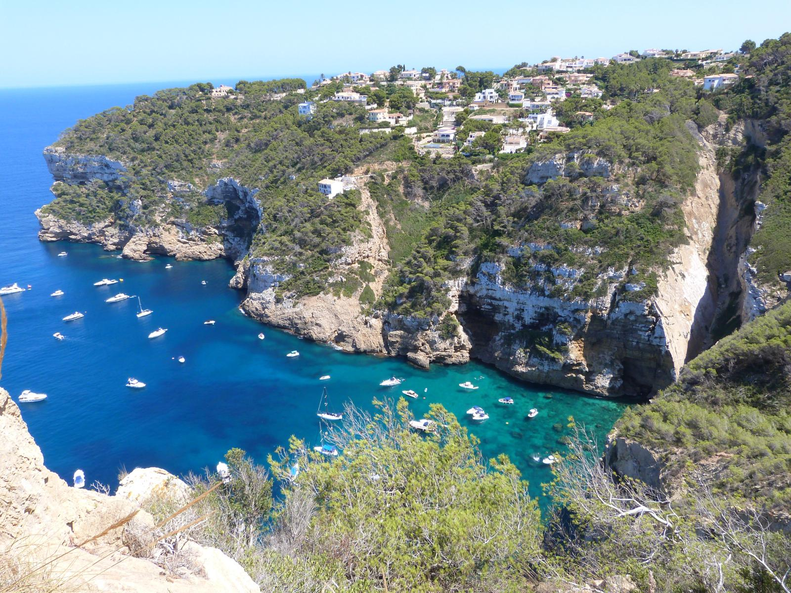
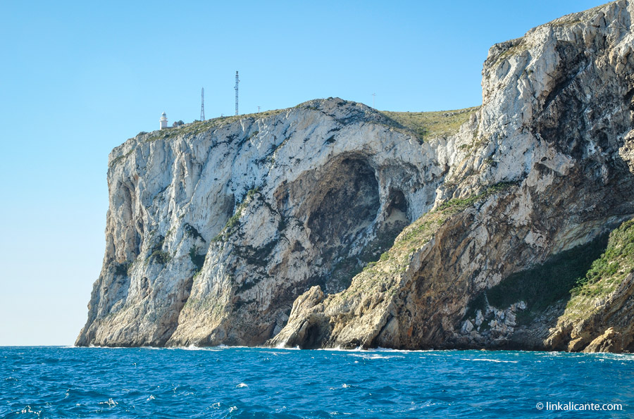
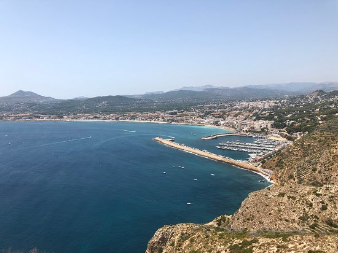
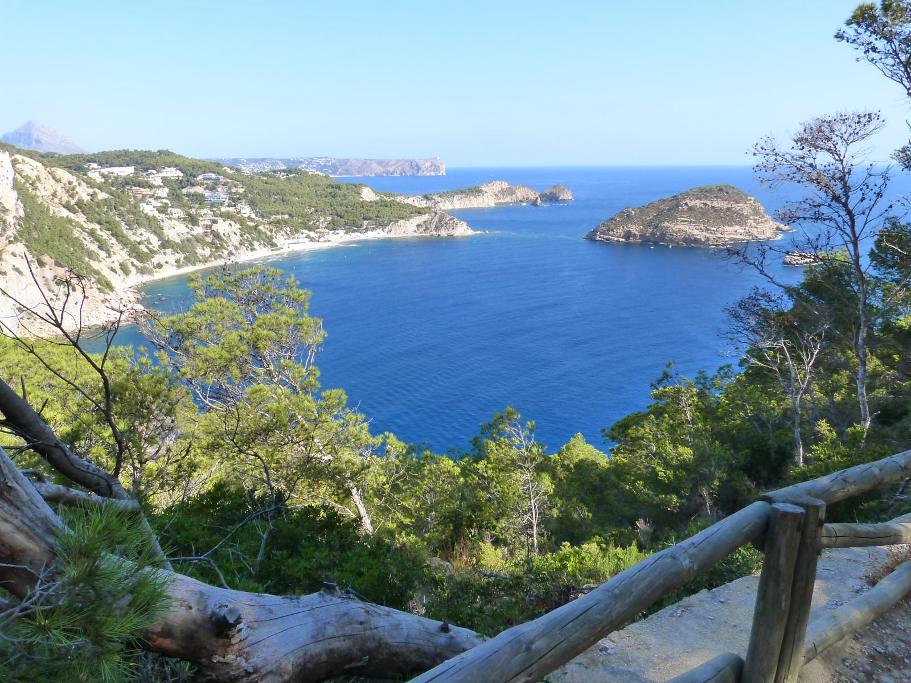
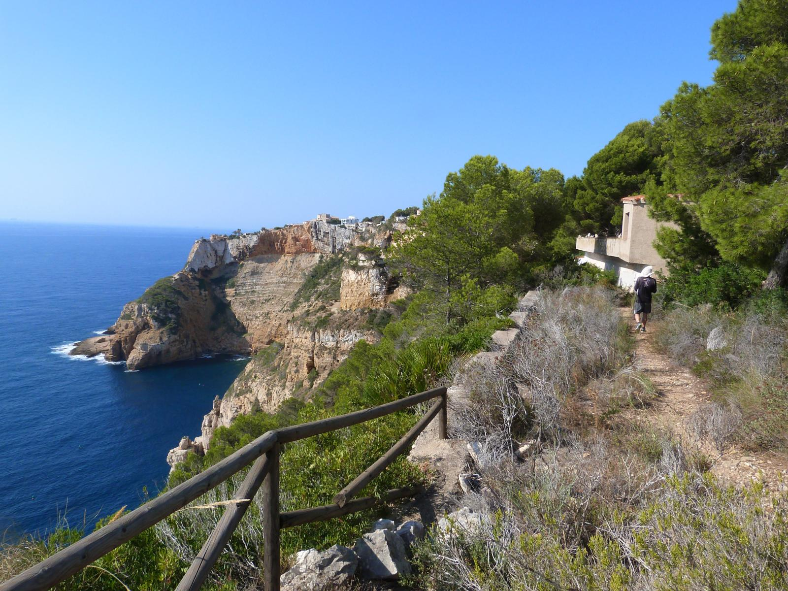
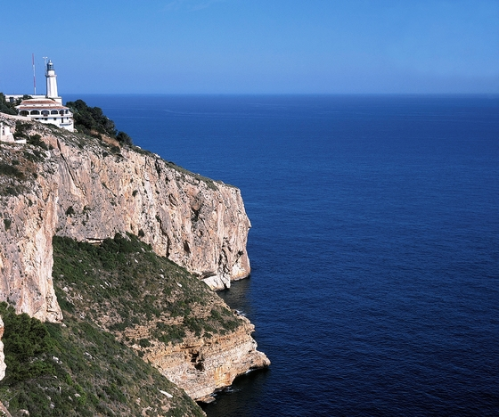
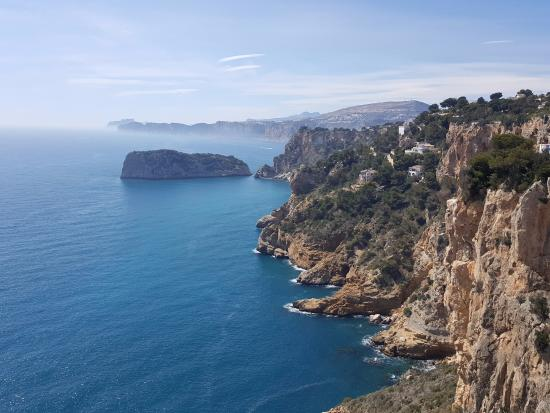

Miradores
Está situado a 150 metros de la Cala del Portitxol y ofrece un espectacular dibujo del conjunto del litoral, que abarca una panorámica desde el Cap de Sant Antoni y el Cap Prim hasta la imponente imagen del Cap Negre, bañado todo por el Mediterráneo.
 El faro que encara la bahía desde el Cap de Sant Antoni fue sucesor de otras construcciones defensivas que aprovecharon la privilegiada situación de la planicie. Los eremitas la erigieron para aislarse de la vida mundana y así, en su honor, fue levantada en el siglo XIV la ermita de San Antonio, que acabó dando nombre al accidente geográfico. También fue ocupado su suelo por una torre vigía erigida para defenderse de las incursiones de piratas, construcciones que dieron lugar al actual faro. Este mirador es, sin duda, uno de los escenarios más privilegiados del litoral valenciano. En él existen dos microreservas vegetales, una en su acantilado Norte y otra en l´Illot de la Mona, a los pies del Cabo.
 Los acantilados desafían al paseante, cortando su paso hacia el mar y ofreciendo, sin embargo, un denso bosque de pino carrasco por donde dejan verse halcones peregrinos en su camino probablemente del Montgó, el gran macizo que protege Xàbia. En el mirador de la Punta del Cap Negre destacan, además, las sendas de pescadores que serpentean su costado y que se acercan a las cuevas del Tabaco y de La Mina.
 El Cap de la Nau, frontera entre los golfos de Valencia y Alicante, es el extremo más oriental del litoral valenciano, justo en el punto más próximo a la isla de Ibiza, de la cual la separan unos 85 kilometros de mar. Su pródiga naturaleza lo convierte en una cita ineludible. De hecho, la Consellería de Medio Ambiente ha destacado su microreserva vegetal. A los pies del cabo puede visitarse la conocida Cova dels Orguens, una cavidad natural descrita por el naturalista Cavanilles a finales del siglo XVIII. Sus calas se presentan además como sugerentes refugios del Mediterráneo.
 